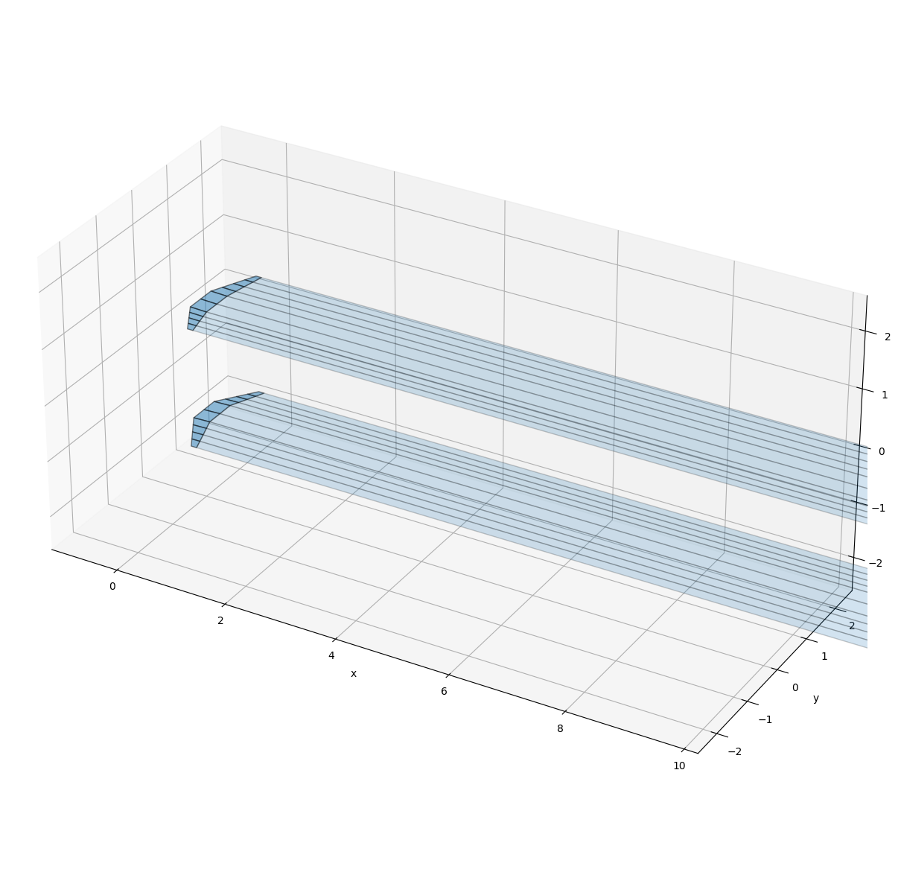
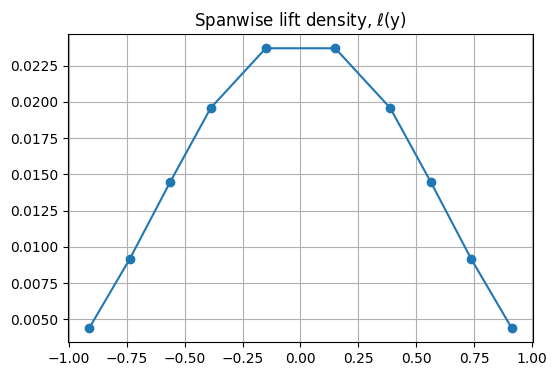
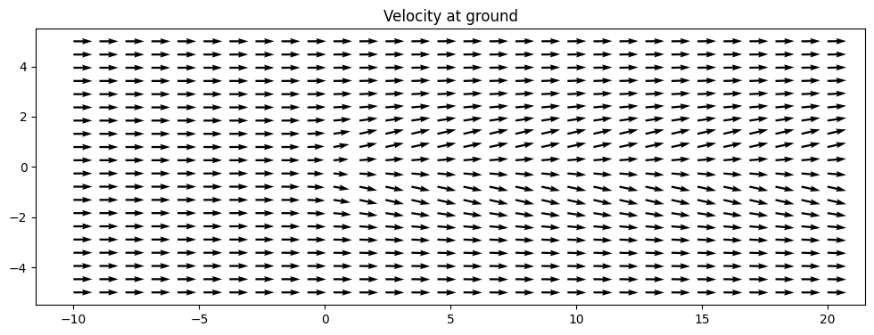
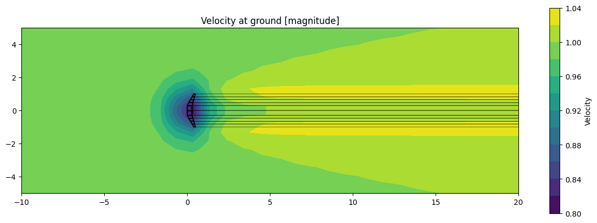
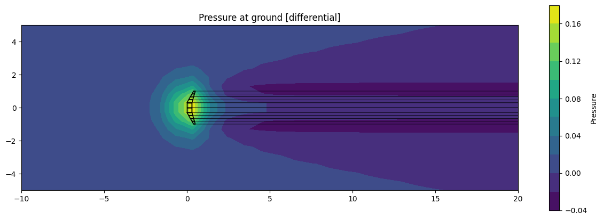
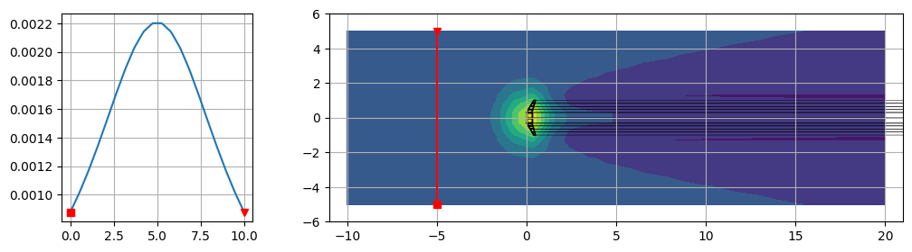
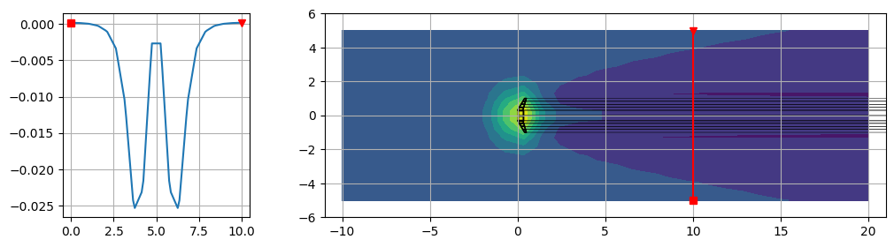
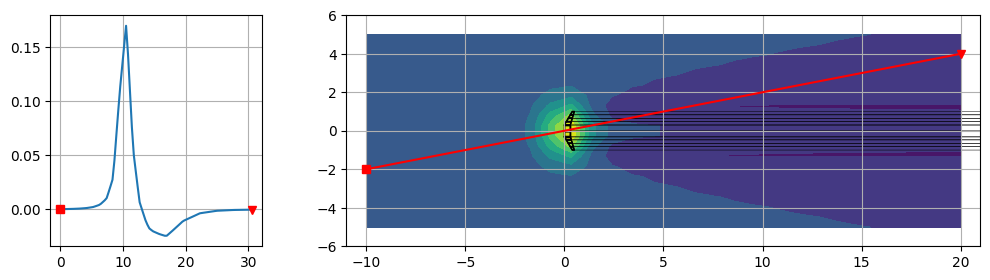
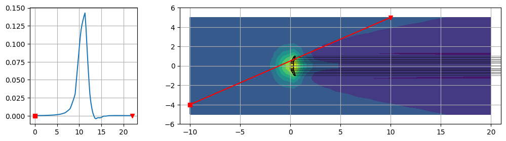
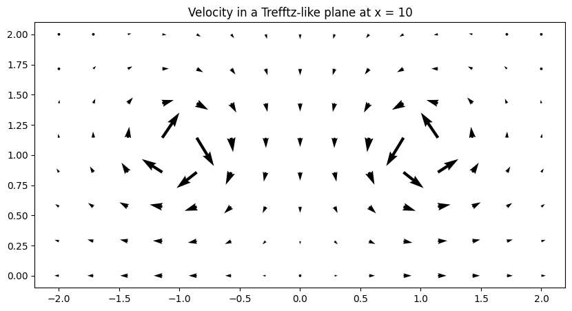

8.1. Weissinger method#
The present implementation focuses on steady flows, first with prescribed wake and later with free wake. Vortex lattice or panel methods are an extension of Weissinger method, with surface discretization of geometries.
8.1.1. Project and (possible) future development#
A reasonable path towards a simple potential aerodynamic 3-dimensional code for streamlined bodies are:
geometry definition
options, like ground effect
wake-body interactions, for complex configurations
…
while problems to be tackled are:
steady flows with prescribed wakes (linear problem)
steady flows with free wakes (position of the wave filaments are unknowns of the problem, that becomes non-linear)
unsteady flows: generic vs. linearized problems, generic vs. periodic, time vs. Fourier domain,…
…
8.1.2. Summary#
Import libraries.
Functions: build geometry, to compute aerodynamic influence coefficients and build the linear system to be solved.
Simulation:
define geometry, free-stream conditions, in or out ground-effect (\(\texttt{ground_effect = True}\) or \(\texttt{False}\)) and other parameters
build geometry
build and solve the linear system
Post-processing:
retrieve loads
evaluate velocity and pressure (with Bernoulli’s theorem) on \(\texttt{z = 0}\) plane
evaluate pressure shadow on ground projection of linear trajectories
evaluate velocity field on a Trefftz-like plane in the wake
8.1.3. Libraries#
import numpy as np
import matplotlib.pyplot as plt
from matplotlib.collections import PolyCollection
from mpl_toolkits.mplot3d.art3d import Poly3DCollection
8.1.4. Functions#
Some useful functions
8.1.4.1. Geometry: wing and prescribed wake#
def build_wing_geometry( acs, chords, alphas, nspans, sym=False):
"""
Inputs:
------
x: stream-wise direction, y: chord-wise direction, z: normal direction (downwards)
acs(3,n_vort+1): x,y,z coordinates of the reference point (here taken as the
"aerodynamic center" of each airfoils at .25 * chord from the
leading edge)
chords, alphas: list of chords and aoas [rad]
npsans(n_vort): # of spanwise vortices per span section
sym: if True, define only a semi-wing and reflect it w.r.t. y-axis, y = 0
Outputs:
-------
"""
x_ac = .0 # default (to be added as a function argument)
#> If sym = False
if sym == False:
n_vortices = np.sum(nspans)
n_points = n_vortices + 1
n_nodes = 2 * n_points
rr_le = np.zeros([3, n_points])
rr_te = np.zeros([3, n_points])
rr_le[0,0] = acs[0,0] - x_ac * chords[0] * np.cos(alphas[0])
rr_le[1,0] = acs[1,0]
rr_le[2,0] = acs[2,0] + x_ac * chords[0] * np.sin(alphas[0])
rr_te[0,0] = acs[0,0] + (1.-x_ac) * chords[0] * np.cos(alphas[0])
rr_te[1,0] = acs[1,0]
rr_te[2,0] = acs[2,0] - (1.-x_ac) * chords[0] * np.sin(alphas[0])
iy2 = 1
#> rr
for ispan in range(len(nspans)):
iy1, iy2 = iy2, iy2 + nspans[ispan]
ts = np.arange(1, nspans[ispan]+1) / nspans[ispan]
dy = acs[1,ispan+1] - acs[1,ispan]
ys = acs[1,ispan] + ts * dy
xs = acs[0,ispan] + ts * ( acs[0,ispan+1] - acs[0,ispan] )
zs = acs[2,ispan] + ts * ( acs[2,ispan+1] - acs[2,ispan] )
cs = chords[ispan] + ts * (chords[ispan+1] - chords[ispan])
als = alphas[ispan] + ts * (alphas[ispan+1] - alphas[ispan])
rr_le[0,iy1:iy2] = xs - x_ac * cs * np.cos(als)
rr_le[1,iy1:iy2] = ys
rr_le[2,iy1:iy2] = zs + x_ac * cs * np.sin(als)
rr_te[0,iy1:iy2] = xs + (1-x_ac) * cs * np.cos(als)
rr_te[1,iy1:iy2] = ys
rr_te[2,iy1:iy2] = zs - (1-x_ac) * cs * np.sin(als)
rr = np.block([rr_le, rr_te])
#> ee
ee = np.zeros([4, n_vortices], dtype=int)
ee[0,:] = np.arange(n_points-1)
ee[1,:] = np.arange(1,n_points)
ee[2,:] = np.arange(n_points+1,2*n_points)
ee[3,:] = np.arange(n_points ,2*n_points-1)
else:
n_points = ( 2*np.sum(nspans) + 1 ) * 2
ee = np.zeros([4, n_points])
vsides = rr_te - rr_le
vcenter = .5 * ( vsides[:,:-1] + vsides[:,1:] )
#> Center of the panel
cc = np.array([ np.mean(rr[:,ie], axis=1) for ie in list(ee.T)]).T
# print('cc: ', cc); print('vcenter:', vcenter)
ac = cc - vcenter * .5
cp = cc # + vcenter * ( .5 - x_ac )
# print("ac: ", ac); print("cp: ", cp)
# print('ee: \n', ee)
# print('rr: \n', rr)
nor = np.array([ np.cross(rr[:, ie[2]]-rr[:, ie[0]], rr[:, ie[1]]-rr[:, ie[3]]) for ie in ee.T.tolist() ]).T
# print("nor: ")
# for n in np.arange(np.shape(nor)[1]):
# print(nor[:,n])
nor = nor / np.linalg.norm(nor, axis=0, keepdims=True)
return ac, cp, ee, rr, nor
def build_prescribed_wake(ee, rr, dir=np.array([1., .0, .0]), length=10):
"""
Assuming;
- ee[0:2,:] are LE, and ee[2:4,:] TE nodes
- rr[:,0:n_nodes/2] LE, rr[:,n_nodes/2:] TE
"""
n_nodes_wing = np.shape(rr)[1]
n_te = np.shape(ee)[1]
n_points = n_te + 1
i_te = np.arange(n_nodes_wing/2, n_nodes_wing, dtype=int)
rr_wake_te = rr[:, i_te]
rr_wake_end = rr_wake_te.copy()
for iwake in np.arange(np.shape(rr_wake_end)[1]):
rr_wake_end[:,iwake] += length * dir
rr_wake = np.block([rr_wake_te, rr_wake_end])
# print('n_points: ', n_points)
ee_wake = np.zeros([4, n_te], dtype=int)
ee_wake[0,:] = np.arange(n_points-1)
ee_wake[1,:] = np.arange(1,n_points)
ee_wake[2,:] = np.arange(n_points+1,2*n_points)
ee_wake[3,:] = np.arange(n_points ,2*n_points-1)
ite_wake = np.arange(n_te)
return ee_wake, rr_wake, ite_wake
def build_ground_effect_geometry(ac, cp, ee, rr, nor, ee_wake, rr_wake, ite_wake):
""" """
n_nodes = np.shape(rr)[1]
n_te = np.shape(ee)[1]
#>
ac_g = ac.copy() ; ac_g[2,:] = -ac_g[2,:]
cp_g = cp.copy() ; cp_g[2,:] = -cp_g[2,:]
rr_g = rr.copy() ; rr_g[2,:] = -rr_g[2,:]
nor_g = nor.copy(); nor_g[2,:] = -nor_g[2,:]
rr_wake_g = rr_wake.copy(); rr_wake_g[2,:] = -rr_wake_g[2,:]
ee_g = ee[[1,0,3,2],:] + n_nodes
ee_wake_g = ee_wake[[1,0,3,2],:] + n_nodes
ite_wake_g = ite_wake + n_te
ac = np.block([ac, ac_g])
cp = np.block([cp, cp_g])
rr = np.block([rr, rr_g])
nor = np.block([nor, nor_g])
rr_wake = np.block([rr_wake, rr_wake_g])
ee = np.block([ee, ee_g])
ee_wake = np.block([ee_wake, ee_wake_g])
ite_wake = np.block([ite_wake, ite_wake_g])
return ac, cp, ee, rr, nor, ee_wake, rr_wake, ite_wake
8.1.4.2. Aerodynamic Influence Coefficients (AIC) and Linear System#
At each control point \(i\),
with \(\mathbf{u}_b\) the velocity of the solid surface, here \(\mathbf{u}_b = \mathbf{0}\) (bodies at rest, w.r.t….), and the flow velocity \(\mathbf{u}(\mathbf{r}_i)\) is the sum of the contributions from the free-stream velcoity \(\mathbf{u}_{\infty}\) and the induced velocity from vortices with intensity \(\Gamma_j\),
with \(\mathbf{u}_j,1\) the induced velocity in \(\mathbf{r}_i\) from a unit-intensity vortex \(j\).
The linear system thus becomes
or formally
def induced_velocity_line(r1, r2, rc):
""" Induced velocity in cp from a unit-intensity line vortex with extreme points r1, r2 """
# v = r2-r1; v_len = np.linalg.norm(v); v_unit = v / v_len
# a1, a2 = rc-r1, rc-r2
# t1 = np.dot(a1, v_unit) # tangential projection (scalar)
# h = a1 - t1 * v_unit # normal projection (vector)
# hdist = np.linalg.norm(h) # distance from cp to r1-r2 line
# vel = ( (v_len-t1) / np.linalg.norm(a2) + t1 / np.linalg.norm(a1) ) / hdist**2 * \
# np.cross(v_unit, h) / ( 4.0 * np.pi )
# # print('v, v_len, v_unit: ', v, v_len, v_unit)
# # print('a1, a2: ', a1, a2)
# # print('t1: ', t1)
# # print('h, hdist: ', h, hdist)
# # print('vel: ', vel)
# return vel
r0 = r2 - r1
r1c = rc - r1
r2c = rc - r2
cross = np.cross(r1c, r2c)
norm_cross_sq = np.dot(cross, cross)
if norm_cross_sq < 1e-10:
return np.zeros(3) # avoid singularity
term1 = np.dot(r0, r1c) / (np.linalg.norm(r1c) + 1e-12)
term2 = np.dot(r0, r2c) / (np.linalg.norm(r2c) + 1e-12)
gamma = 1.
v = (gamma / (4 * np.pi)) * (cross / norm_cross_sq) * (term1 - term2)
return v
def build_weissinger_ls(ee, rr, cp, nor, ee_wake, rr_wake, ite_wake, vel):
""" """
nu = np.shape(ee)[1] # n. of unknowns
#> Initialize array of AIC and the RHS
A, b = np.zeros((nu, nu), dtype=float), np.zeros(nu, dtype=float)
for i in np.arange(nu): # loop over control points (equations)
for j in np.arange(nu): # loop over body vortices (unknowns)
for l in np.arange(4): # loop over lines of the ring (4)
r1 = rr[:, ee[ l % 4,j]]
r2 = rr[:, ee[(l+1)% 4,j]]
# print(cp[:,i])
# print(nor[:,i])
aic = np.dot(induced_velocity_line(r1, r2, cp[:,i]), nor[:,i])
# print(i,j,l, aic)
# print(induced_velocity_line(r1, r2, cp[:,i]))
A[i,j] += aic
for j in np.arange(nu): # loop over wake vortices (unknowns)
for l in np.arange(4): # loop over lines of the ring (4)
jpan = ite_wake[j]
r1 = rr_wake[:, ee_wake[ l % 4,j]]
r2 = rr_wake[:, ee_wake[(l+1)% 4,j]]
A[i,jpan] += np.dot(induced_velocity_line(r1, r2, cp[:,i]), nor[:,i])
b[i] = - np.dot(vel, nor[:,i])
return A, b
8.1.5. Simulation#
#> Parameters
vel_infty = np.array([1.,0.,0.0])
rho = 1.
ground_effect = True
z_offset = 1.0 # height over z = 0. (ground)
alpha = 2. * np.pi / 180.
alpha_rad = alpha * np.pi / 180.
wake_dir = np.array([1., .0, -alpha_rad])
wake_len = 50
8.1.5.1. Build geometry#
#> Build geometry
#> Parameters and input of build_wing_geometry() function
# #> Rectangular wing
# alpha = 1.
# nacs = 2
# acs = np.array([[ 0., -1., .0 ], [ 0., 100., 0.]]).T
# acs[2,:] += z_offset
# chords = np.array([.3, .3,])
# alphas = np.array([alpha, alpha]) * np.pi/180.
# nspans = np.array([4])
#> Swept wing
nacs = 4
acs = np.array([[ .4,-1., .05], [ 0., -.3, .0 ], [ 0., .3, 0.], [ .4, 1., .05]]).T
acs[2,:] += z_offset
chords = np.array([.1, .3, .3, .1])
alphas = np.array([0., 2., 2., 0.]) * np.pi/180. + alpha_rad
nspans = np.array([4, 2, 4])
# #> Swept wing (with symmetry option) - TODO
# nacs = 3
# acs = np.array([[ 0., .0, .0 ], [ 0., .3, 0.], [ .4, 1., .05]]).T
# acs[2,:] += z_offset
# chords = np.array([.3, .3, .1])
# alphas = np.array([2., 2., 0.]) * np.pi/180.
# nspans = np.array([2, 3])
#> Build geometry
ac, cp, ee, rr, nor = build_wing_geometry(acs, chords, alphas, nspans, sym=False)
#> Wake
ee_wake, rr_wake, ite_wake = build_prescribed_wake(ee, rr, dir=wake_dir, length=wake_len)
#> Ground effect
ground_effect = True # True
if ( ground_effect ):
ac, cp, ee, rr, nor, ee_wake, rr_wake, ite_wake = \
build_ground_effect_geometry(ac, cp, ee, rr, nor, ee_wake, rr_wake, ite_wake )
# print("ac:\n", ac)
# print("cp:\n", cp)
#> Plot Quad elements in a 3-dimensional plot
rr_plot, ee_plot, rr_wake_plot, ee_wake_plot = rr.copy(), ee.copy(), rr_wake.copy(), ee_wake.copy()
verts = [ [ rr_plot.T.tolist()[int(i)] for i in p ] for p in ee_plot.T.tolist() ]
verts_wake = [ [ rr_wake_plot.T.tolist()[int(i)] for i in p ] for p in ee_wake_plot.T.tolist() ]
# print(verts_wake)
fig = plt.figure(figsize=(15, 15))
ax = plt.axes(projection='3d')
# ax.scatter3D(rr[0,:], rr[1,:], rr[2,:])
ax.add_collection3d(Poly3DCollection(verts, alpha=.5, edgecolor='black'), )
ax.add_collection3d(Poly3DCollection(verts_wake, alpha=.2, edgecolor='black'), )
# ax.scatter3D(ac[0,:], ac[1,:], ac[2,:], color='black')
# ax.scatter3D(cp[0,:], cp[1,:], cp[2,:], color='red')
# ax.scatter3D(rr_wake[0,:], rr_wake[1,:], rr_wake[2,:], color='blue')
# ax.quiver(cp[0,:],cp[1,:],cp[2,:], nor[0,:], nor[1,:], nor[2,:], length=.2, )
ax.set_xlabel('x')
ax.set_ylabel('y')
ax.set_zlabel('z')
ax.set_xlim([-1, 10])
ax.set_ylim([-2.5, 2.5])
ax.set_zlim([-2.5, 2.5])
ax.set_aspect('equal')
plt.show()

8.1.5.2. Linear system#
#> Test induce velocity
# cp = np.array([0., 0., 0.])
# r1 = np.array([-1., 1., 0.])
# r2 = np.array([ 1., 1., 0.])
# vel = induced_velocity_line(r1, r2, cp)
# print(vel)
#> Build linear system
A, b = build_weissinger_ls(ee, rr, cp, nor, ee_wake, rr_wake, ite_wake, vel_infty)
#> Solve linear system
gam = np.linalg.solve(A, b)
print(gam)
[0.00439347 0.00915658 0.01447456 0.01957368 0.02368887 0.02368887
0.01957368 0.01447456 0.00915658 0.00439347 0.00439347 0.00915658
0.01447456 0.01957368 0.02368887 0.02368887 0.01957368 0.01447456
0.00915658 0.00439347]
8.1.6. Post-processing and results#
8.1.6.1. Loads#
#> Retrive loads
# print(ee_plot.T)
rho = 1.
# dspans and dchords for very rough computation of wing surface
dspans = np.array([ np.abs(rr[1, ie[0]] - rr[1, ie[1]]) for ie in ee_plot.T ])
dchords = np.array([ .5 * np.abs(-rr[0, ie[0]] - rr[0, ie[1]] + rr[0, ie[2]] + rr[0, ie[3]]) for ie in ee_plot.T ])
dL = rho * np.linalg.norm(vel_infty) * gam * dspans
print(dL)
n_elems = np.sum(nspans) # retriev only real panels if ground effect is True
L = np.sum(dL[:n_elems])
yc = np.array([ .5*(rr[1,ie[0]] + rr[1,ie[1]] ) for ie in ee_plot.T ])
print(yc)
S = np.sum(dspans[:n_elems]*dchords[:n_elems]) # chords[0] * ( acs[1,-1] - acs[1,0] )
alpha_rad = alpha * np.pi / 180.
print("spans: ", dspans)
print("chord: ", chords)
print("Surface: ", S)
print("Lift: ", L)
print("cl : ", L / ( .5 * rho * S * np.linalg.norm(vel_infty)**2 ))
print("cl_alpha:", L / ( .5 * rho * S * np.linalg.norm(vel_infty)**2 ) / alpha_rad)
fig, ax = plt.subplots(1,1, figsize=(6,4))
ax.plot(yc[:n_elems], dL[:n_elems] / dspans[:n_elems], 'o-')
ax.grid()
ax.set_title('Spanwise lift density, $\ell$(y)')
fig.show()
[0.00076886 0.0016024 0.00253305 0.00342539 0.00710666 0.00710666
0.00342539 0.00253305 0.0016024 0.00076886 0.00076886 0.0016024
0.00253305 0.00342539 0.00710666 0.00710666 0.00342539 0.00253305
0.0016024 0.00076886]
[-0.9125 -0.7375 -0.5625 -0.3875 -0.15 0.15 0.3875 0.5625 0.7375
0.9125 -0.9125 -0.7375 -0.5625 -0.3875 -0.15 0.15 0.3875 0.5625
0.7375 0.9125]
spans: [0.175 0.175 0.175 0.175 0.3 0.3 0.175 0.175 0.175 0.175 0.175 0.175
0.175 0.175 0.3 0.3 0.175 0.175 0.175 0.175]
chord: [0.1 0.3 0.3 0.1]
Surface: 0.45980827525107937
Lift: 0.030872724921761067
cl : 0.13428520791585555
cl_alpha: 220.41616662940893
/tmp/ipykernel_334461/4289016219.py:32: UserWarning: Matplotlib is currently using module://matplotlib_inline.backend_inline, which is a non-GUI backend, so cannot show the figure.
fig.show()

8.1.6.2. Velocity and pressure at ground#
#> Evaluate velocity and pressure in desired points (probe points)
xarray = np.linspace(-10, 20, 30)
yarray = np.linspace(-5, 5, 20)
zarray = np.linspace( 0, 0, 1)
# print(xarray)
# print(yarray)
# print(zarray)
XX, YY = np.meshgrid(xarray, yarray)
UU, VV, WW = .0*XX, .0*XX, .0*XX
for ix in np.arange(np.shape(XX)[0]):
for iy in np.arange(np.shape(XX)[1]):
rr_probe = np.array([ XX[ix,iy], YY[ix,iy], .0 ])
for j in np.arange(np.shape(ee)[1]):
for l in np.arange(4):
r1 = rr[:, ee[ l % 4,j]]
r2 = rr[:, ee[(l+1)% 4,j]]
vel = induced_velocity_line(r1, r2, rr_probe)
UU[ix,iy] += vel[0]
VV[ix,iy] += vel[1]
WW[ix,iy] += vel[2]
for j in np.arange(np.shape(ee_wake)[1]):
for l in np.arange(4):
r1 = rr_wake[:, ee_wake[ l % 4,j]]
r2 = rr_wake[:, ee_wake[(l+1)% 4,j]]
vel = induced_velocity_line(r1, r2, rr_probe)
UU[ix,iy] += vel[0]
VV[ix,iy] += vel[1]
WW[ix,iy] += vel[2]
UU[ix,iy] += vel_infty[0]
VV[ix,iy] += vel_infty[1]
WW[ix,iy] += vel_infty[2]
#> Pressure, using Bernoulli
PP = - rho * np.linalg.norm(vel_infty) * ( UU**2 + VV**2 + WW**2 ) / 2. + .5 * rho * np.linalg.norm(vel_infty)**2
print("max WW: ", np.max(WW))
fig, ax = plt.subplots(1,1, figsize=(12, 5))
ax.quiver(XX, YY, UU, VV,)
ax.set_aspect('equal') # Call set_aspect on the axes object
ax.set_title('Velocity at ground')
fig.show()
verts_2d = [ [ r[:2] for r in e ] for e in verts ]
verts_wake_2d = [ [ r[:2] for r in e ] for e in verts_wake ]
fig, ax = plt.subplots(1,1, figsize=(15, 5))
cf = ax.contourf(XX, YY, np.sqrt(UU**2 + VV**2), 10)
ax.add_collection(PolyCollection(verts_2d, alpha=1., facecolor='none', edgecolor='black'), )
ax.add_collection(PolyCollection(verts_wake_2d, alpha=1., facecolor='none', edgecolor='black', linewidths=.2), )
ax.set_aspect('equal') # Call set_aspect on the axes object
cbar = fig.colorbar(cf, ax=ax)
cbar.set_label('Velocity')
ax.set_title('Velocity at ground [magnitude]')
fig.show()
fig, ax = plt.subplots(1,1, figsize=(15, 5))
cf = ax.contourf(XX, YY, PP, 10)
ax.add_collection(PolyCollection(verts_2d, alpha=1., facecolor='none', edgecolor='black'), )
ax.add_collection(PolyCollection(verts_wake_2d, alpha=1., facecolor='None', edgecolor='black', linewidths=.2), )
ax.set_aspect('equal') # Call set_aspect on the axes object
cbar = fig.colorbar(cf, ax=ax)
cbar.set_label('Pressure')
ax.set_title('Pressure at ground [differential]')
fig.show()
max WW: 9.71445146547012e-17
/tmp/ipykernel_334461/162280788.py:7: UserWarning: Matplotlib is currently using module://matplotlib_inline.backend_inline, which is a non-GUI backend, so cannot show the figure.
fig.show()
/tmp/ipykernel_334461/162280788.py:20: UserWarning: Matplotlib is currently using module://matplotlib_inline.backend_inline, which is a non-GUI backend, so cannot show the figure.
fig.show()
/tmp/ipykernel_334461/162280788.py:30: UserWarning: Matplotlib is currently using module://matplotlib_inline.backend_inline, which is a non-GUI backend, so cannot show the figure.
fig.show()



8.1.6.3. Local pressure at ground along a line#
from scipy.interpolate import RegularGridInterpolator
line_extremes = [
{ 'x0': -10., 'y0': 0., 'x1': 20., 'y1': 0. },
{ 'x0': -5., 'y0': -5., 'x1': -5., 'y1': 5. },
{ 'x0': 10., 'y0': -5., 'x1': 10., 'y1': 5. },
{ 'x0': -10., 'y0': -2., 'x1': 20., 'y1': 4. },
{ 'x0': -10., 'y0': -4., 'x1': 10., 'y1': 5. },
]
n_points = 100
for iline in line_extremes:
# . Generate sampling points along the line
xs = np.linspace(iline['x0'], iline['x1'], n_points)
ys = np.linspace(iline['y0'], iline['y1'], n_points)
ds = np.sqrt( ( xs[1:] - xs[0:-1] )**2 + ( ys[1:] - ys[:-1] )**2 )
ss = np.cumsum(ds); ss = np.insert(ss, 0, 0)
points = np.vstack([ys, xs]).T # IMPORTANT: order = (y, x)
interp = RegularGridInterpolator( (yarray, xarray), PP, method='linear', bounds_error=False, fill_value=None )
p_line = interp(points)
fig, ax = plt.subplots(1,2, figsize=(12, 3), gridspec_kw={'width_ratios': [1, 3]})
ax[0].plot(ss, p_line)
ax[0].plot(ss[0], p_line[0], 's', color='red'); ax[0].plot(ss[-1], p_line[-1], 'v', color='red');
ax[1].contourf(XX, YY, PP)
ax[1].plot(xs, ys, color='red')
ax[1].plot(xs[0], ys[0], 's', color='red'); ax[1].plot(xs[-1], ys[-1], 'v', color='red');
ax[1].add_collection(PolyCollection(verts_2d, alpha=1., facecolor='none', edgecolor='black'), )
ax[1].add_collection(PolyCollection(verts_wake_2d, alpha=1., facecolor='None', edgecolor='black', linewidths=.2), )
ax[1].set_xlim(np.min(XX)-1, np.max(XX)+1)
ax[1].set_ylim(np.min(YY)-1, np.max(YY)+1)
ax[0].grid(); ax[1].grid()
fig.show()
/tmp/ipykernel_334461/1289699379.py:35: UserWarning: Matplotlib is currently using module://matplotlib_inline.backend_inline, which is a non-GUI backend, so cannot show the figure.
fig.show()




8.1.6.4. Trefftz-like plane#
#> Wake ~ "Trefftz"-like plane
xw = 10
xarray = np.linspace(xw,xw, 1)
yarray = np.linspace(-2, 2, 15)
zarray = np.linspace( 0, 2, 8)
YY, ZZ = np.meshgrid(yarray, zarray)
UU, VV, WW = .0*YY, .0*YY, .0*YY
for iy in np.arange(np.shape(YY)[0]):
for iz in np.arange(np.shape(YY)[1]):
rr_probe = np.array([ xw, YY[iy,iz], ZZ[iy,iz] ])
for j in np.arange(np.shape(ee)[1]):
for l in np.arange(4):
r1 = rr[:, ee[ l % 4,j]]
r2 = rr[:, ee[(l+1)% 4,j]]
vel = induced_velocity_line(r1, r2, rr_probe)
UU[iy,iz] += vel[0]
VV[iy,iz] += vel[1]
WW[iy,iz] += vel[2]
for j in np.arange(np.shape(ee_wake)[1]):
for l in np.arange(4):
r1 = rr_wake[:, ee_wake[ l % 4,j]]
r2 = rr_wake[:, ee_wake[(l+1)% 4,j]]
vel = induced_velocity_line(r1, r2, rr_probe)
UU[iy,iz] += vel[0]
VV[iy,iz] += vel[1]
WW[iy,iz] += vel[2]
UU[iy,iz] += vel_infty[0]
VV[iy,iz] += vel_infty[1]
WW[iy,iz] += vel_infty[2]
fig, ax = plt.subplots(1,1, figsize=(12, 5))
ax.quiver(YY, ZZ, VV, WW, scale=15)
ax.set_aspect('equal') # Call set_aspect on the axes object
ax.set_title(f"Velocity in a Trefftz-like plane at x = {xw}")
fig.show()
/tmp/ipykernel_334461/2078332749.py:5: UserWarning: Matplotlib is currently using module://matplotlib_inline.backend_inline, which is a non-GUI backend, so cannot show the figure.
fig.show()
